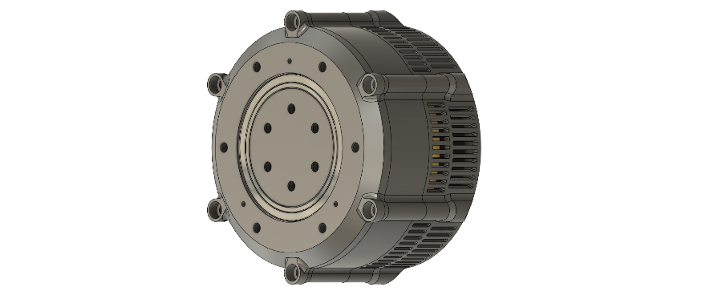
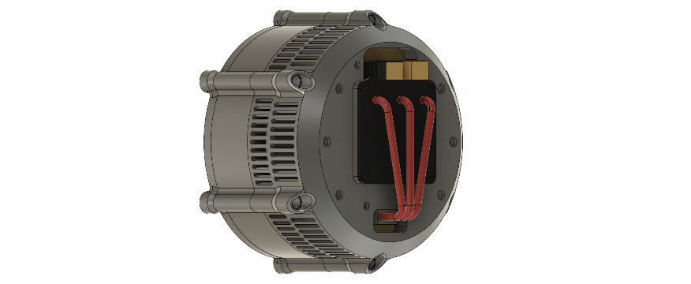
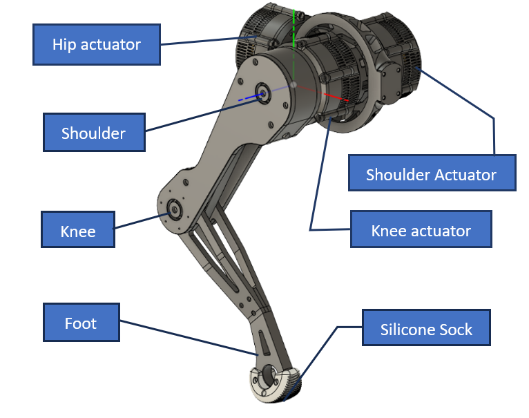
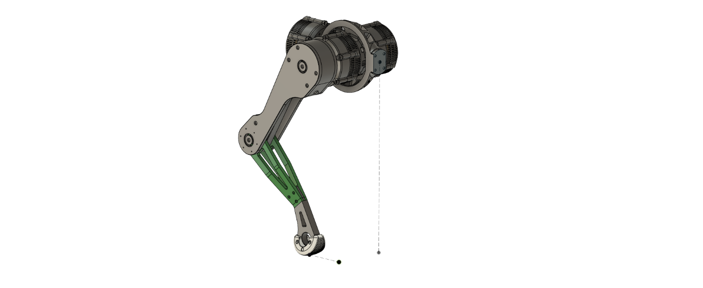
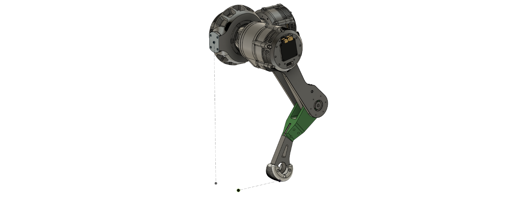

Schvaan


Mechanical
Proprioceptive actuator
- Magnetic encoder for position sensing/commutation
- Phase current sensing for torque estimation.

- Adduction-Abduction at hip. (about axis||x)
- Flexion-extension at shoulder. (about axis||y)
- Flexion-extension at knee. (about axis||y)


3-DOF Leg: Problems & Solutions
Leg : Problems and Solutions
Actuator Tests